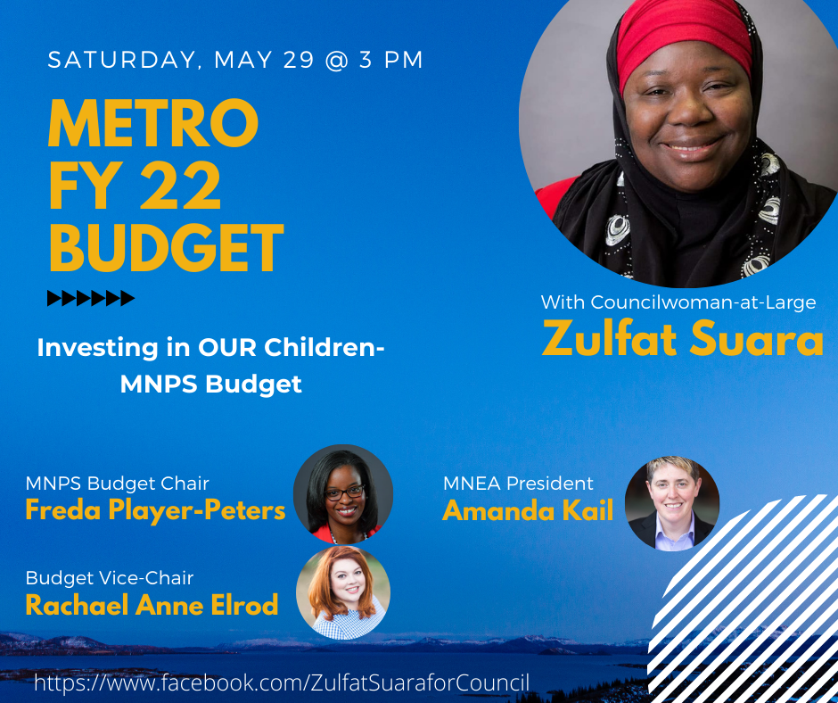

Reappraisal/Referendum & Your Taxes
For last week’s Budget Conversation, I was joined by the Assessor or Property, Vivian Wilhoite, and SEIU Local 205’s Political Director, Jason Freeman. Together, we spoke about the reappraisal process and the implications of the referendum. Below are the main takeaways from our discussion.
Breaking Down the Reappraisal Process
WHAT IS REAPPRASIAL?
Reappraisal is a four-year cycle required by the State Board of Equalization (SBOE) that serves to reestablish equity of property values. It is an extremely important function because property values do not change uniformly throughout the county over time. To account for the uneven growth, property assessment values are determined by cost, income, and market approaches that are compliant with the Uniform Standards of Professional Appraisal Practice (USPAP) and State Board of Equalization (SBOE). Furthermore, the assessment function is conducted independently of the taxation function in order to ensure fair reappraisal. The trustee only gains access to the information to calculate the taxes after the assessment has been completed. Overall, the most important thing to know about reappraisal is that it aims to reestablish equity, not increase revenue.
UNDERSTANDING THE CERTIFIED TAX RATE (CTR)
As mentioned above, reappraisal should not provide the local government with any additional revenue on pre-existing construction projects. Therefore, the county establishes the Certified Tax Rate (CTR) to ensure that the same amount of revenue is collected county-wide on existing properties as in the previous year. What does this mean for you? Reappraisal can actually increase or decrease the amount of taxes you owe on an individual level. Basically, the CTR compares the change in market value of your property to the county-wide average change in value. If the growth rate of your property value is lower than that of the county average, you will end up paying less in taxes than the year before. If your property value grows more than the county average, you will pay more. Typically, the individual changes are dependent on where you live. Below is an example provided by the Assessor of Property and her team.
What is important to note here is that the total revenue collected from property taxes on pre-existing properties remains the same in both periods, but there are changes on the individual level. Furthermore, new construction is not included when calculating the CTR. If you are interested in calculating your tax level using the CTR, follow this LINK (the calculator is at the bottom of the page)
WHAT DO WE KNOW ABOUT THE 2021 APPRAISAL SO FAR?
- There is a 34.05% countywide median appraised percentage increase, including all property classifications (i.e. residential and commercial)
- Residential values are strong with an actual residential increase of 33.07%
- There was a 4.9% growth in new construction in 2020 to add additional revenue to the city’s budget
- There were a record breaking number of permits granted in 2020 (6-9 billion)
- Same as last year, the estimated property taxes (before appeals) from commercial properties is higher than that of residential properties
METHODS FOR REVIEW/APPEAL
If you are unsatisfied with your reappraisal, you are able to appeal /call it under review. There are two types of reviews: informal and formal. The deadline for the Informal Reviews has already passed (May 21, 2021 at 4:00pm), so if you filed an appeal you are scheduled to receive the response no later than June 11, 2021. However, due to an online glitch, if you did not file an Informal Review by the deadline, you did not yet lose your right to appeal for a Formal Review. The schedule is as follows:
- Starting May 24, 2021: you can begin to schedule an appeal to the independent Metropolitan Board of Equalization (MBOE) whose members are appointed by the mayor and confirmed by the Metro Council
- DEADLINE: June 25, 2021 at 4:00 pm: a failure to appeal to the independent MBOE by this deadline may result in losing further appeal rights for the 2021 tax year
- After the MBOE adjourns, their decisions are mailed to you, giving you 45 days to appeal to the independent State Board of Equalization (SBOE) if you disagree with the MBOE.
- Commercial properties can skip the MBOE and appeal directly to the SBOE
- If the deadline is missed this year, an appeal can be filed next year or any year after
THE REALITY OF THE REFERENDUM: ANALYZING EACH PROPOSITION
Many of you may have received the letter in the mail detailing the propositions of the referendum. It is important to be extremely critical of the language being used in this letter and its implications on our government going forward. Below, with the help of Jason Freeman, I have outlined both what the document says and what it actually means.
1. Roll back the massive 34-37% property tax increase
Right out of the bat, the referendum uses extremely charged language to scare the public. For example, the referendum’s main point of rolling back the 34% tax increase is misleading. First due to the reappraisal and the reduction in Certified Tax Rate, the property tax rate is already down by 30%. What the referendum will achieve by rolling back to the pre 2020 taxes will ONLY be a 4% decrease. It is also important to note that the tax rate went down 30% in 2017, but there were no headlines about it. In reality, readjustment, both up and down, will always occur due to the reappraisal process.
Furthermore, the call to limit property tax increases at 3% per fiscal year without having a referendum is a poor policy choice because each election costs the city $1 million to conduct. Such a process would be wasteful and ignore the state law that gives taxing authority to its legislative bodies.
2. Recall elected officials
This provision suggests that 10% of voters who participated in Council elections should be able to recall a councilperson and that the recalled official may not run for re-election. This provision is blatantly anti-democracy as it would allow a measly 10% to overrule the lawful majority and bars any recalled official from defending their seat. Furthermore, as stated above, repeated special elections throughout 35 council districts and 5 at large positions could be extremely costly.
3. Abolish lifetime benefit for elected officials
The council voted this year to discontinue the only lifetime benefit received by council (health insurance), making this vote unnecessary, unless proponents want to take the benefits away from current and prior councilmembers as well. Though the bill passed, I still believe that the pushback against lifetime benefits is extremely discouraging because we work tirelessly to serve the Nashville community, putting in full time hours for part time pay. Although I am fortunate enough to be in a position to decline the benefits, some of my colleagues are not able to balance full time jobs and family responsibilities. Therefore, removing the benefits will only deter individuals from diverse backgrounds from pursuing a career in public service, when that is the very thing we should be pushing for more of. Feel free to read my blog on councilmember insurance here.
4. Preserve voter charter amendments
At present, there are two ways in which the charter can be amended: through public petitions and council approval. This provision attempts to bar the Council from drafting amendments to the charter. However, we must understand that most amendments are put in place to clean up language ambiguities. Consequently, barring the Council from writing amendments would prevent it from cleaning up an important legal document.
5. Protect publicly owned parks, lands, and greenways
This provision would require a referendum for every transaction of public land that costs $5+ million or that creates a lease exceeding 20 years in length. I agree that protecting public land is vital. We need to optimize our public land for affordable housing, parks etc for our residents. However, this provision is flawed for two reasons. First, while it sounds great in theory, it ignores the fact that most large land transactions occur between governmental departments. Therefore, $1 million of your tax dollars would be going to funding yet another election. Second, we already have public hearings and public input to deal with this issue.
6. Protect promises to Nashville
This section suggests that if professional sports teams don’t play in a place for more than 24 consecutive months during the term of a lease, they lose the lease on the building and it reverts to public land. Therefore, if a tornado were to hit the Preds stadium, for example, and it required serious repairs that prevented the team from playing there for 2 years, Nashville would lose the Preds. This would violate Metro’s bond documents, leases, and all kinds of agreements that are currently already in place that potentially put Metro on the hook for millions and millions of dollars.
VOTE NO ON JULY 27TH

Residents will have the opportunity to vote on the referendum on July 27. While I understand folks being upset over last year’s increase, I want everyone to remember that we did not get there in 1 year. After the 2017 appraisal, many residents were paying less than they did before the reappraisal because the CTR was not adjusted by the Council. We got to a point where the controller needed to step in. This referendum wants to send us backward, in a direction that is not in the best interest of the majority of our residents. We must be weary of the referendum as its implications do not necessarily align with its propositions. And, we must remember what the 4% increase in property taxes actually funds.We now have a budget that truly invests in our community. That fully funds our schools, ensures public safety and increases affordable housing.
“If this referendum should pass, our firefighters and first responders, nurses, public health and other essential workers could lose their jobs. Teachers could lose pay, and the services our neighborhoods, businesses, seniors and our most vulnerable residents rely on could face deep cuts. And without new investments, it will be harder for Nashville to fully recover from the economic impact of COVID-19” – SaveNashvilleNow
I encourage you all to Vote NO on July 27.
If you missed last week’s Budget Conversation with Assessor Wilhoite and Mr. Freeman, you can watch the entire episode at the link below.
NEXT BUDGET CONVERSATION
Increase teacher salaries, an investment of $2.5M in SEL (Social Emotional Learning) and over $1 billion budget. Join me Saturday May 29 at 3pm as we discuss the MNPS FY22 Budget and what it means for our students. Please join us on Facebook live with your comments and questions at https://www.facebook.com/ZulfatSuaraforCouncil/

Thank you for your commitment to understanding the budget. As always, I am open for questions and comments. I look forward to seeing you at the next budget conversation.